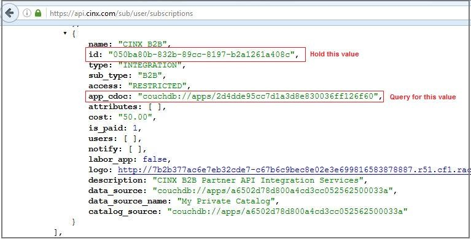
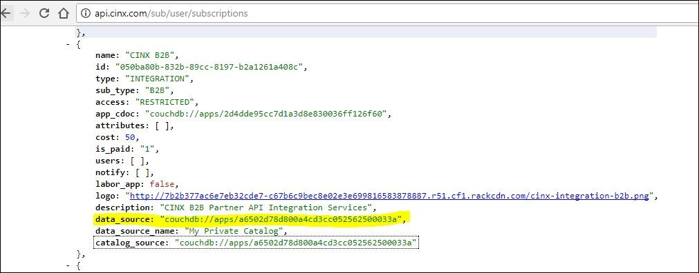
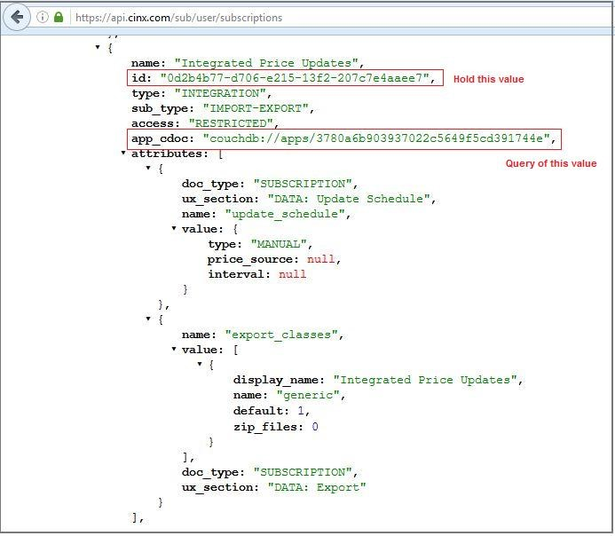

Introduction Original
Welcome to the Kittn API! You can use our API to access Kittn API endpoints, which can get information on various cats, kittens, and breeds in our database.
We have language bindings in Shell, Ruby, Python, and JavaScript! You can view code examples in the dark area to the right, and you can switch the programming language of the examples with the tabs in the top right.
This example API documentation page was created with Slate. Feel free to edit it and use it as a base for your own API's documentation.
Authentication
To authorize, use this code:
const kittn = require('kittn');
let api = kittn.authorize('meowmeowmeow');
Make sure to replace
meowmeowmeowwith your API key.
Kittn uses API keys to allow access to the API. You can register a new Kittn API key at our developer portal.
Kittn expects for the API key to be included in all API requests to the server in a header that looks like the following:
Authorization: meowmeowmeow
Kittens
Get All Kittens
const kittn = require('kittn');
let api = kittn.authorize('meowmeowmeow');
let kittens = api.kittens.get();
The above command returns JSON structured like this:
[
{
"id": 1,
"name": "Fluffums",
"breed": "calico",
"fluffiness": 6,
"cuteness": 7
},
{
"id": 2,
"name": "Max",
"breed": "unknown",
"fluffiness": 5,
"cuteness": 10
}
]
This endpoint retrieves all kittens.
HTTP Request
GET http://example.com/api/kittens
Query Parameters
| Parameter | Default | Description |
|---|---|---|
| include_cats | false | If set to true, the result will also include cats. |
| available | true | If set to false, the result will include kittens that have already been adopted. |
Get a Specific Kitten
const kittn = require('kittn');
let api = kittn.authorize('meowmeowmeow');
let max = api.kittens.get(2);
The above command returns JSON structured like this:
{
"id": 2,
"name": "Max",
"breed": "unknown",
"fluffiness": 5,
"cuteness": 10
}
This endpoint retrieves a specific kitten.
HTTP Request
GET http://example.com/kittens/<ID>
URL Parameters
| Parameter | Description |
|---|---|
| ID | The ID of the kitten to retrieve |
Delete a Specific Kitten
const kittn = require('kittn');
let api = kittn.authorize('meowmeowmeow');
let max = api.kittens.delete(2);
The above command returns JSON structured like this:
{
"id": 2,
"deleted" : ":("
}
This endpoint deletes a specific kitten.
HTTP Request
DELETE http://example.com/kittens/<ID>
URL Parameters
| Parameter | Description |
|---|---|
| ID | The ID of the kitten to delete |
Introduction
App/Sub Model
CINX Application/Subscription Model Introduction
A CINX customer (organization) has the opportunity to subscribe to different applications available on the platform. An application can be a grouping of pages and functionality on the CINX web site or external applications that consume content from CINX. Each application on the CINX platform has a unique identifier and a range of fields that define its attributes. When an organization subscribes to an application a new unique identifier is created to link the application to the subscribing organization. This application id will be used in API calls to identify and grant access to requested data operations.

Data Sources
CINX Data Source Introduction
CINX supports different “catalogs” of content. Companies subscribing to CINX can have access to multiple catalogs or databases of content. Here are some common catalogs in CINX:
- HPH Plumbing/Mechanical catalog
- MCAA WebLEM
- PHCC Labor Units
Another catalog that each CINX company can use is a “Private” catalog. This catalog of content is specific to the subscribing company and can contain material items. These items can be copied from another catalog on CINX or manually entered/uploaded by the company.
Estimating systems, CAD/BIM software systems, and other software partners that utilize CINX content will also have a separate CINX Catalogs. This allows each system to have a specific set of items that CINX maintains.
A good way to visualize this concept is to open the Catalog drop-down in the CINX Search app. Here is a screen shot that shows a company that has access to many catalogs. Note: each company’s private catalog will be listed using the company’s name as registered in CINX.

When working with the CINX API in conjunction with a company’s subscription a catalog is often named Data Source.
App - Data Sources
CINX Application and Data Source Introduction
For software partner (external) applications that consume data from CINX there is an important attribute in the CINX subscription that defines which CINX catalog is used to acquire information for data outputs. This attribute is called a data source.
Each application subscription in CINX has this attribute.
Importantly, a company can subscribe to an application multiple times provided that the data source is different. For example, a company using an industry estimating system may have CINX produce updates for different locations using different CINX Catalogs (data sources). One location may want standard list prices from the standard estimating database and another location may want update files to contain net buy prices based on their private catalog of content.

Please note that when working with the CINX Subscription API response each combination of an application and a data source will be listed in separate blocks.
Below is a sample showing an App with its data source
App Name: Viewpoint Estimation
Data Source Name: Viewpoint Estimation

App Name: Viewpoint Estimation
Data Source Name: My Private Catalog

Getting Started
REST API
REST API
The CINX platform offers programmatic access to read and write data using ReST web services and standard HTTP verbs.
Authentication & Headers
HTTP Basic Authentication over HTTPS is used to control access to CINX platform resources.
With each API call, you’ll need to set request headers, including a CINX User’s User Name and Password.
Account Authorization
CINX accounts are subscription based and have expiration dates. Accounts with expired subscriptions will not have access to CINX data.
Production Endpoint
The production endpoint for the CINX API is:
https://api.cinx.com/
API Response Formatting – Standard/JSON
All CINX API responses use a standardized format. By default a JSON formatted response is provided. Please see below if you prefer XML.
The “response” object will contain meta data about the server’s response to the request.
The “rows” array will contain the query results.
{ "start_time": 1411574224.8083, "response": { "status_code": 200, "message": "OK", "record_count": 1, "server_response_time": 0, "total_elapsed_time": 0.02492094039917, "total_count": 0 }, "rows": [ { ] }
API Response Formatting – XML
To receive an XML response, please add the following parameter to the url:
format=xml
<cinx_api>
<start_time>1414436492.2267</start_time>
<response>
<status_code>200</status_code>
<message>OK</message>
<record_count>2</record_count>
<server_response_time>0</server_response_time>
<total_elapsed_time>0.013047933578491</total_elapsed_time>
<total_count>0</total_count>
</response>
<rows>
<row>
</row>
</rows>
</cinx_api>
Result Rows - Paging
For many HTTP GET requests you can use URL parameters to define the number of rows returned in the response. Valid input parameters are:
start={number}
limit={number}
PING Server
API – PING Server
//Using cinx-api.js
var cinxApi = new CinxApi();
cinxApi.setCredentials('CINX USERNAME', 'CINX PASSWORD');
cinxApi.pingCinx()
.then(function(response) {
console.log(response);
});
The above command returns JSON structured like this:
{
"response": {
"status_code": 200,
"message": "OK",
"method": "Validation->ping",
"uri": "ping",
"format": "json",
"start_time": 1563128596.686,
"total_time": 0.027906894683838,
"record_count": 1,
"total_count": 0
},
"rows": [
{
"status": 200,
"message": "CINX: API Ping Response: Ok"
}
]
}
This request can be used to test the availability of the CINX API.
URL Pattern:
{api path}/ping
URL Samples:
http://api.cinx.com/ping
http://api.cinx.com/ping?format=xml
User Auth
API – GET User Subscriptions/Authorizations (Orgs and Applications)
//Using cinx-api.js
var cinxApi = new CinxApi();
cinxApi.setCredentials('CINX USERNAME', 'CINX PASSWORD');
cinxApi.getSubscriptions()
.then(function(response) {
console.log(response);
});
The above command returns JSON structured like this:
{
"response": {
"status_code": 200,
"message": "OK",
"method": "User->getUserSubscriptions",
"uri": "sub/user/subscriptions",
"format": "json",
"start_time": 1562338517.204,
"total_time": 0.31632900238037,
"record_count": 2,
"total_count": 0
}
"rows": [
"org": {
"names": {
"primary": "Ratkoceri Engineering-LIVE",
"alternate": null,
"short": null,
"previous": null
},
"cinx_id": {
"type": "ORG",
"domain": "orgs",
"id": "org-0000-8247"
}
},
"access_status": {
"code": 200,
"message": "OK",
"reason": null
},
"start_date": "2015-06-18 13:04:53Z",
"end_date": "2022-07-18 13:04:53Z",
"apps": [
{
"name": "HPH Plumbing/Mechanical",
"id": "e82d126d-53c7-b455-8e26-cc0a4a2b6762",
"type": "DATA-SOURCE",
"sub_type": "CATALOG",
"access": "PUBLIC",
"app_cdoc": "couchdb://apps/dab29b19c69e2703849cd5010a183fdd",
"attributes": [
],
"cost": 0,
"is_paid": "1",
"users": [
],
"notify": [
],
"labor_app": false,
"logo": "https://cdn.cinx.com/assets/apps/org-0000-0001_logo_1.png",
"description": "HPH Plumbing and Mechanical Material Catalog",
"data_source": "couchdb://apps/dab29b19c69e2703849cd5010a183fdd",
"data_source_name": "HPH Plumbing/Mechanical",
"catalog_source": "couchdb://apps/dab29b19c69e2703849cd5010a183fdd"
}
],
"cinx_id": {
"type": "SUBSCRIPTION",
"domain": "subscriptions",
"id": "47895223-a950-a206-ef6c-fb489667eeb3"
},
"user": {
"names": {
"first": "Burim",
"middle": "",
"last": "Ratkoceri",
"suffix": ""
},
"cinx_id": {
"type": "USER",
"domain": "users",
"id": "911d0a71-c650-51dc-5a28-d35d1229397b"
},
"joomla_id": "10396",
"orgs": [
{
"org_cdoc": "couchdb://orgs/org-0000-8247",
"role": "Administrator",
"permissions": [
],
"permission_extensions": [
]
},
{
"org_cdoc": "couchdb://orgs/org-0000-7068",
"role": "User",
"permissions": [
],
"permission_extensions": [
]
}
]
}
]
}
This request will be used to get the applications/subscriptions that the user is authorized to access. The response will contain information required to make additional API calls.
URL Pattern:
{api path}/sub/user/subscriptions
URL Sample:
https://api.cinx.com/sub/user/subscriptions
Auth Response
Working with the GET User Subscriptions/Authorizations API Response
The Subscriptions/Authorizations API response will provide the necessary information to make subsequent API requests.
Please keep the following CINX Platform attributes in mind as you begin to work with the Subscriptions response:
- A User may be associated with more than one Org (multiple Orgs in the CINX subscription result)
- An Org can subscribe to multiple catalogs of content
- An Org might have multiple subscriptions to a single App (the data for the App coming from different sources) (multiple instances of the same App within a single Org in the CINX subscription result)
- A User may use a CINX Addin for multiple partner applications on the same computer
- Objects in the CINX Platform are assigned Unique Ids that will be required API URL elements
The JSON response uses the following structure:

Each Row array of the response will correspond to an Org to which the user is a member and will contain the following components:
Org: contains two objects labeled Names and CINX Id. The CINX Id will contain the Unique Id to identify the Org on the CINX Platform.
Access Status: defines the org’s subscription status which controls access to the API.
Start Date: lists the date the CINX subscription was established.
End Date: provides the scheduled expiration date for the subscription.
Apps: an array of applications that the org currently subscribes to and can access using the API. The structure of an app object is governed by its Type. Current CINX App types include Data-Source (catalogs of content), Integration (interactions with other software systems), and Website (CINX web site features).
CINX Id: contains the Unique Id for the org’s subscription.
User: provides basic information about the user and his/her CINX Unique Id.
The following sections contain important information about using the API and the CINX Unique Ids that will be required for making some API calls.
Is the subscription active?
You will first need to verify that the subscription is active. This is done by checking the access_status object of the response. If the subscription is active the response will have the following information:
"access_status": { "code": 200, "message": "OK", "reason": null }
If the subscription has expired the response will have the following information:
"access_status": { "code": 401, "message": Unauthorized", "reason": "Subscription expired on [2014-08-03]" }
Does the subscription response contain a B2B (data integration) application?
A B2B CINX application allows programmatic access to content on the CINX Platform. To determine if an Org has a B2B app in their subscription, you will need to query the apps array for an app_cdoc that has this value: "couchdb://apps/2d4dde95cc7d1a3d8e830036ff126f60" (which is a CINX Platform constant). Once this is located please hold the value of the id: field. The string shown in this field is required to make additional API calls to retrieve item and project information.

In the above screenshot, the necessary id value is: 050ba80b-832b-89cc-8197-b2a1261a408c
Does the subscription response contain multiple B2B (data integration) applications?
It is possible for an org to have multiple B2B applications. This is allowed to let CINX link to different data sources. A data source is a catalog of content. One org may have access to multiple content catalogs.
It is recommended that B2B application with an org’s Private Catalog data source be used when working with the public API for a specific org.
Similar to the B2B app cdoc, the My Private Catalog data source will have a static/constant that can be used when querying the API’s Subscription response. Inside a B2B app there will be a data_source field. The value in this field for the My Private Catalog will be couchdb://apps/a6502d78d800a4cd3cc052562500033a. This value is a CINX Platform constant.

It is not recommended to use the data_source_name field as the name text may change in the future.
Does the subscription response contain Integration (Import-Export) application?
A CINX Import-Export application provides API access to formats required for integration with external applications. This will be used in the API calls to pull price updates for a Your company catalog.

The necessary id value in this screenshot is: 0d2b4b77-d706-e215-13f2-207c7e4aaee7
What is the user’s CINX Unique Id?
The CINX User Unique Id (GUID) will be required by some API requests. These requests will generally be ones in which new information is created or existing content is updated. The user will then be identified as the “last modified by”.
Org/Company
Get Org Details
API – GET Organization Details
This request will be used to get the company’s CINX organization details.
URL Pattern:
{api path}/sub/{B2B GUID}/org/details
Sample:
https://api.cinx.com/sub/050ba80b-832b-89cc-8197-b2a1261a408c/org/details
Modify Org
API – Modify Organization Details
This request will be used to modify an organization’s details.
URL Pattern:
{api path}/sub/{B2B Id GUID}/modify/org?values={JSON Structure}
The values section of this URL must contain properly formatted JSON. If the structure is an array, all elements of the array must be submitted. Please see the CINX Organization JSON Structures section of this document for a listing of the available JSON structures.
Sample:
Dev sample using HPH Account:
http://api.dev.cinx.biz/sub/83d8ba34-ecf1-59ab-1013-0ba2603adb36/modify/org?values={"types_customers":"Residential,Commercial,Industrial"}
JSON Structure
CINX Organization JSON Structures
The JSON structures shown below can be used in API calls to Modify an existing CINX Organization. If the structure is an array, all elements of the array must be submitted.
Name - Primary (required) “name_primary”:”value”
Name - Short “name_short”:”value”
Name - Alternate “name_alternate”:”value”
Name - Previous “name_previous”:”value”
Addresses (array) “add_address”:[{”address_type”:”type value”,”address1”: “value”,”address2”: “value”,”address3”: “value”,”city”: “value”,”state”: “value”,”postal_code”: “value”,”country”: “value”,”latitude”: “value” ,”longitude”: “value”}] Available “address types” are: SHIPPING, MAILING, BILLING Default Country: USA
Marketing – Org Description “marketing_desc”:”value”
Marketing – Org Tag Line “marketing_tag”:”value”
Marketing – Org Year Founded “marketing_founded”:”value”
Location Id “location_id”:”value”
Location Type “location_type”:”value” Available “location types” are: HEADQUARTERS, BRANCH, WAREHOUSE, FABRICATION FACILITY, SHOP, SALES OFFICE, REGIONAL OFFICE, CENTRAL DISTRIBUTION CENTER, TRAINING CENTER, SHOWROOM
Customer Types “types_customers”:”value” Values parameter can be a comma delimited list of types. For example: RESIDENTIAL,COMMERCIAL
Project Types “types_projects”:”value” Values parameter can be a comma delimited list of types. For example: EDUCATION,SERVICE,CHEMICAL,BREWERY,INDUSTRIAL
Vendor Types “types_vendors”:”value” Values parameter can be a comma delimited list of types. For example: PVF,HANGER,RENTAL,OFFICE SUPPLIES
Additional content types are available; please contact HPH if your system requires additional project content.
Get Users
API – GET an Organization’s User List
This request will be used to get a company’s list of CINX users. The results of this API will contain the User’s CINX system Id which can be used in other API calls.
URL Pattern:
{api path}/sub/{B2B GUID}/users
Sample:
https://api.cinx.com/sub/dfed7d88-adf8-5356-8029-fe061c93d0fe/users
Get Locations/Addresses
API – GET an Organization’s Addresses
This request will be used to get a company’s list of addresses.
URL Pattern:
{api path}/sub/{B2B GUID}/addresses
Sample:
https://api.cinx.com/sub/dfed7d88-adf8-5356-8029-fe061c93d0fe/org/addresses
Get Customer Types
API – GET an Organization’s Customer Type List
This request will be used to get a company’s list of Customer Type Classifications.
URL Pattern:
{api path}/sub/{B2B GUID}/customer/types
Sample:
https://api.cinx.com/sub/dfed7d88-adf8-5356-8029-fe061c93d0fe/customer/types
Get Vendor Types
API – GET an Organization’s Vendor Type List
This request will be used to get a company’s list of Vendor Type Classifications.
URL Pattern:
{api path}/sub/{B2B GUID}/vendor/types
Sample:
https://api.cinx.com/sub/dfed7d88-adf8-5356-8029-fe061c93d0fe/vendor/types
Get Project Types
API – GET an Organization’s Project Type List
This request will be used to get a company’s list of Project Type Classifications.
URL Pattern:
{api path}/sub/{B2B GUID}/project/types
Sample:
https://api.cinx.com/sub/dfed7d88-adf8-5356-8029-fe061c93d0fe/project/types
Get Dispute Reasons
API – GET an Organization’s Invoice Dispute Reasons List
This request will be used to get a company’s list of Invoice Dispute types.
URL Pattern:
{api path}/sub/{B2B GUID}/dispute/reasons
Sample:
https://api.cinx.com/sub/dfed7d88-adf8-5356-8029-fe061c93d0fe/dispute/reasons
Get Return Reasons
API – GET an Organization’s Return Reasons List
This request will be used to get a company’s list of Return Reasons.
URL Pattern:
{api path}/sub/{B2B GUID}/return/reasons
Sample:
https://api.cinx.com/sub/dfed7d88-adf8-5356-8029-fe061c93d0fe/return/reasons
Get Return Actions
API – GET an Organization’s Return Actions List
This request will be used to get a company’s list of Return Actions.
URL Pattern:
{api path}/sub/{B2B GUID}/return/actions
Sample:
https://api.cinx.com/sub/dfed7d88-adf8-5356-8029-fe061c93d0fe/return/actions
Mfr Price Sheets
Introduction
Manufacturer Price Sheet Introduction
A Price Sheet is a document that is issued by a product manufacturer or service provider that define the prices that will be charged to consumers for procuring the listed materials or services. Manufacturers with large product offerings often have multiple price sheets with each containing only a segment of the manufacturer’s overall product listing. For example, Charlotte has different price sheets for their Cast Iron No Hub, Service Weight, and Extra Heavy products.
Due to rising raw material, labor, transportation and many other factors, manufacturers frequently release new instances of price sheets with revised pricing levels.
Every item price in the Harrison Plumbing/Mechanical catalog on CINX is linked to Manufacturer Price Sheet from which it was obtained. The CINX API provides several endpoints for working with Manufacturer Price Sheets.
To better understand the API, please review the following terms/concepts:
Price Sheet Hierarchy: In CINX there is a hierarchal structure that is used to manage the manufacturers’ price sheet instances. The three levels of the hierarchy are: Manufacturer, Price Sheet Master, and Price Sheet Detail.
Manufacturer: This is the organization that creates and releases the price sheets. Each manufacturer will have a unique CINX identifier that will be used in API requests. Example Manufacturer: Charlotte
Price Sheet Master: This defines a type of price sheet issued by the manufacturer. Each Price Sheet Master will have a unique CINX identifier that will be used in API requests. Example Price Sheet Master: Charlotte No Hub
Price Sheet Detail: This is a specific instance of a price sheet type. Each Price Sheet Detail will have a unique CINX identifier that will be used in API requests. Example Price Sheet Detail: Charlotte No Hub – January 1, 2018
Effective Date: This is the date that the prices on the Price Sheet are scheduled to be implemented. This date is set by the manufacturer. Each Price Sheet Detail will have an Effective Date value.
Get Sheet Types
API – GET Manufacturer’s Price Sheet Masters
This request will be used to get a list of the manufacturer’s price sheet masters.
URL Pattern:
{api path}/sub/{B2B Id GUID}/pricesheet/masters/{org id}
Sample:
https://api.cinx.com/sub/050ba80b-832b-89cc-8197-b2a1261a408c/pricesheet/masters/org-0000-1108
The results will be sorted alphabetically by description field values.
Get Sheet Instances
API – GET Manufacturer’s Price Sheet Master Details
This request will be used to get a list of the price sheet details for a given manufacturer price sheet master.
URL Pattern:
{api path}/sub/{B2B Id GUID}/pricesheet/master/{org id}/{price sheet master id}/details
Sample:
https://api.cinx.com/sub/050ba80b-832b-89cc-8197-b2a1261a408c/pricesheet/masters/org-0000-1108
The results will be sorted descending on the date_effective field values.
To make subsequent API calls using a price sheet detail, the id field within the cinx_doc object will be required.
Notifications
POST External Files
API Call – POST External file with User Notifications
This request will be used to POST an uploaded external file (Excel, PDF, txt) to the CINX CDN. In addition, this POST operation allows for user notifications to be delivered by the API. The notification types are Email and CINX System Alert.
URL Pattern:
{api path}/sub/{B2B Id GUID}/partner/exec/cinx/lib-doc? type=MATERIAL+REQUISITION &name={requisition id}&parent=couchdb://{CINX Org Id}/{CINX Project GUID}&email_subject={text}¬ify_email={User Email address}¬ify_alert={CINX User GUID}
Sample:
https://api.cinx.com/sub/e8478738-8c4b-a152-609d-f50e34be0090/partner/exec/cinx/lib-doc? type=MATERIAL+REQUISITION&name=Req123&parent=couchdb://org-0000-6138/3dde31ee-694e-0e43-8af2-8382bb6dcc1f&email_subject=NewShopMaterialRequestionReq123¬ify_email=bakigervalla@gmail.com¬ify_email=dmcphaul@hphguide.com¬ify_alert=c61a47a8-3a4a-025a-0db1-2b9e609da089¬ify_alert=54e0afa4-c359-f55b-ad3c-cc63df698900
URL Parameter Information
/partner/exec/cinx/lib-doc
?type="MATERIAL REQUISITION"
&name= {document name} populate with the Requisition Id
&parent=couchdb://
CINX Org ID = CINX Id of Org that the current user is associated with /default Org Id (ie, org-0000-7833 for Your company Dev account)
Project GUID = CINX Project GUID
&email_subject= {subject line for email notification} “New CINX Material Requisition Received – {req id}”
¬ify_email={email address} – Send to User email address - REPEAT as needed using full parameter label and value
¬ify_alert={user id/cdoc} - Send to CINX User GUID - REPEAT as needed using full parameter label and value
Get Alerts
API – GET Received User Alerts
This request will be used get a User’s CINX system alerts.
URL Pattern:
{api path}/sub/{B2B Id GUID}/user/alerts/received?shown=0
Samples:
“Shown” Parameter
This optional URL parameter allows us to filter the alerts given their “User Shown” status.
?shown=0 ?shown=1
An alert is marked shown when a user has view the alert.
https://api.cinx.com/sub/050ba80b-832b-89cc-8197-b2a1261a408c/user/alerts/received?shown=0
https://api.cinx.com/sub/050ba80b-832b-89cc-8197-b2a1261a408c/user/alerts/received?shown=1
“Closed” Parameter
This optional URL parameter allows us to filter the alerts given their “User Closed” status.
An alert is marked closed when a user has “deleted” the alert from a UI.
?closed=0 ?closed=1
https://api.cinx.com/sub/050ba80b-832b-89cc-8197-b2a1261a408c/user/alerts/received?closed=0
https://api.cinx.com/sub/050ba80b-832b-89cc-8197-b2a1261a408c/user/alerts/received?closed=1
Modify Alerts
API – Mark User Alerts Shown or Closed
This request will be used update a user’s CINX system alert’s Shown or Closed status.
URL Pattern:
{api path}/sub/{B2B Id GUID}/user/alert/{alert GUID}/modify?values={“shown or closed attribute label”:{boolean indicator}
Samples:
Mark Shown
{api path}/sub/{B2B Id GUID}/user /alert/{alert GUID}modify?values={"shown":1 }
https://api.cinx.com/sub/050ba80b-832b-89cc-8197-b2a1261a408c/user/alert/5dbf1bdf-732c-5c3b-d4cc-c837f5fc2fa2/modify?values={%22shown%22:1}
{api path}/sub/{B2B Id GUID}/user/alert/{alert guid}/modify?values={"closed": 1 }
https://api.cinx.com/sub/050ba80b-832b-89cc-8197-b2a1261a408c/user/alert/5dbf1bdf-732c-5c3b-d4cc-c837f5fc2fa2/modify?values={%22closed%22:1}
Vendors
Introduction
CINX Vendor Introduction
For contractors on the CINX platform, a Vendor is a Wholesale Distributor or other entities that provide products or services. As a web-based platform CINX has the ability for contractors and distributors to connect with one another if they are both already members of the CINX site. Similar to LinkedIn and Facebook, a request is sent by the requesting party to create a relationship whereby CINX activities and transactions can be shared between the two companies.
As shown in the graphic, a simple click of the Add As Vendor button will send a request to the Vendor to accept the contractor’s request.
When a relationship between the two parties is created CINX creates a Commerce GUID that links the two parties. This GUID is the key that allows for the storage of important transaction parameters that are required to deliver and process transactions.
It is therefore also used by the API as a URL parameter when fetching and updating relationship data.
CINX also has the ability for a contractor to create a Private vendor. This is a vendor that is not a member of the CINX site. A private vendor is unique to the contractor and will still be linked using a Commerce GUID.
Get Vendor List
API – GET Vendor List
This request will be used to get a list of the company’s Vendors from CINX.
URL Pattern:
{api path}/sub/{B2B Id GUID}/vendors
Sample:
https://api.cinx.com/sub/050ba80b-832b-89cc-8197-b2a1261a408c/vendors
Get Vendor Details
API – GET Vendor Details – using CINX Commerce GUID
This request will be used to get the details of a vendor.
URL Pattern:
{api path}/sub/{B2B Id GUID}/vendor/{commerce guid}/details
Sample:
https://api.cinx.com/sub/050ba80b-832b-89cc-8197-b2a1261a408c/vendor/512d5a2f-1d6c-21ca-9b97-9299ac9c802a/details
Create Vendor
API – PUT New Vendor
This request will be used to insert a new private vendor for an organization.
URL Pattern:
{api path}/sub/{B2B Id GUID}/private/vendor/create?values={JSON Structure}
The values section of this URL must contain properly formatted JSON. If the structure is an array, all elements of the array must be submitted. Please see the CINX Vendor JSON Structures section of this document for a listing of the available JSON structures.
Sample:
https://api.cinx.com/sub/dfed7d88-adf8-5356-8029-fe061c93d0fe/private/vendor/create?values={%22name_primary%22:%22Hilti%22,%22vendor_id%22:%22H123%22,%22vendor_type%22:%22Hardware%22,%22add_address%22:{%22type%22:%22Mailing%22,%22address1%22:%22Route%203%22,%22address2%22:%22Building%204%22,%22address3%22:%22Suite%20G%22,%22city%22:%22Woburn%22,%22state%22:%22MA%22,%22postal_code%22:%2201234%22,%22country%22:%22USA%22,%22latitude%22:%22%22,%22longitude%22:%22%22}}
Modify Vendor
API – Modify a Vendor
API – Modify a Vendor This request will be used to modify a private vendor for an organization.
URL Pattern:
{api path}/sub/{B2B Id GUID}/private/vendor/{commerce guid}/modify?values={JSON Structure}
The values section of this URL must contain properly formatted JSON. If the structure is an array, all elements of the array must be submitted. Please see the CINX Vendor JSON Structures section of this document for a listing of the available JSON structures.
Sample:
http://api.cinx.com/sub/dfed7d88-adf8-5356-8029-fe061c93d0fe/private/vendor/org-0001-4221/modify?values={"name_primary":"Hilti-5","vendor_id":"H125"}
Vendor JSON Structures
CINX Vendor JSON Structures
The JSON structures shown below can be used in API calls to Create or Modify a Vendor.
If the structure is an array, all elements of the array must be submitted.
Vendor Number/Id “vendor_id”:”value”
Vendor Status “vendor_status”:”value” Available options are: A, I Option Definitions: A=Active, I=Inactive Default value: A
Vendor Type (each org can define a set list of vendor types to be used to classify their vendors) “vendor_type”:”value”
The options shown below are for creating or modifying Private Vendors
Name - Primary (required) “name_primary”:”value”
Name - Short “name_short”:”value”
Name - Alternate “name_alternate”:”value”
Name - Previous “name_previous”:”value”
Addresses (array) “add_address”:[{”address_type”:”type value”,”address1”: “value”,”address2”: “value”,”address3”: “value”,”city”: “value”,”state”: “value”,”postal_code”: “value”,”country”: “value”,”latitude”: “value” ,”longitude”: “value”}] Available “address types” are: SHIPPING, MAILING, BILLING Default Country: USA
Location Id “location_id”:”value”
Location Type “location_type”:”value” Available “location types” are: HEADQUARTERS, BRANCH, WAREHOUSE, FABRICATION FACILITY, SHOP, SALES OFFICE, REGIONAL OFFICE, CENTRAL DISTRIBUTION CENTER, TRAINING CENTER, SHOWROOM